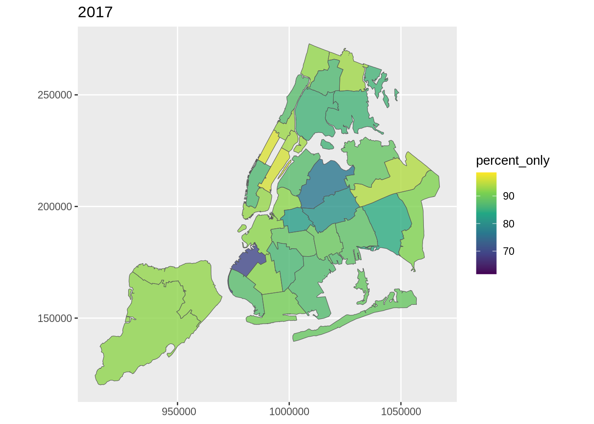

suppressPackageStartupMessages(library(sf))
suppressPackageStartupMessages(library(tidyverse))
suppressPackageStartupMessages(library(readr))
suppressPackageStartupMessages(library(here))
library(leaflet)
shape <- st_read(here::here("dataset", "NYC_geography-master", "NYC_geography-master", "uhf34_shapefiles", "CHS_UHF_34_DOHMH_2004.shp"), quiet = TRUE)
shape <- shape |> rename(GeoID=UHFtxt) |> select(GeoID) |> filter(GeoID!=0)
insurance <- read_csv(here::here("dataset", "NYC EH Data Portal - Health insurance (adults) (filtered)(1).csv"),
col_types = cols(GeoID = col_character()))
insurance <- insurance |> mutate(percent_only = str_extract(Percent, "^[0-9.]+"))
insurance_uhf <- insurance |> filter(!(Geography %in% c("New York City", "Bronx", "Brooklyn", "Manhattan", "Queens", "Staten Island")))
##################################################################################################
insurance_uhf_filter_2021<-insurance_uhf |> filter(TimePeriod=="2021")|>select(GeoID, percent_only)
insurance_uhf_filter_2020<-insurance_uhf |> filter(TimePeriod=="2020")|>select(GeoID, percent_only)
insurance_uhf_filter_2019<-insurance_uhf |> filter(TimePeriod=="2019")|>select(GeoID, percent_only)
insurance_uhf_filter_2018<-insurance_uhf |> filter(TimePeriod=="2018")|>select(GeoID, percent_only)
insurance_uhf_filter_2017<-insurance_uhf |> filter(TimePeriod=="2017")|>select(GeoID, percent_only)
insurance_uhf_filter_2016<-insurance_uhf |> filter(TimePeriod=="2016")|>select(GeoID, percent_only)
insurance_uhf_filter_2013<-insurance_uhf |> filter(TimePeriod=="2013")|>select(GeoID, percent_only)
insurance_uhf_filter_2012<-insurance_uhf |> filter(TimePeriod=="2012")|>select(GeoID, percent_only)
##################################################################################################
joined_2021 <- shape |> left_join(insurance_uhf_filter_2021, by = "GeoID") |> mutate(percent_only = as.double(percent_only))
joined_2020 <- shape |> left_join(insurance_uhf_filter_2020, by = "GeoID") |> mutate(percent_only = as.double(percent_only))
joined_2019 <- shape |> left_join(insurance_uhf_filter_2019, by = "GeoID") |> mutate(percent_only = as.double(percent_only))
joined_2018 <- shape |> left_join(insurance_uhf_filter_2018, by = "GeoID") |> mutate(percent_only = as.double(percent_only))
joined_2017 <- shape |> left_join(insurance_uhf_filter_2017, by = "GeoID") |> mutate(percent_only = as.double(percent_only))
joined_2016 <- shape |> left_join(insurance_uhf_filter_2016, by = "GeoID") |> mutate(percent_only = as.double(percent_only))
joined_2013 <- shape |> left_join(insurance_uhf_filter_2012, by = "GeoID") |> mutate(percent_only = as.double(percent_only))
joined_2012 <- shape |> left_join(insurance_uhf_filter_2012, by = "GeoID") |> mutate(percent_only = as.double(percent_only))
##################################################################################################
all_data <- bind_rows(
joined_2021,
joined_2020,
joined_2019,
joined_2018,
joined_2017,
joined_2016,
joined_2013,
joined_2012
)
##################################################################################################
# Global min and max for color scale
global_min <- min(all_data$percent_only, na.rm = TRUE)
global_max <- max(all_data$percent_only, na.rm = TRUE)
##################################################################################################
ggplot() +
geom_sf(data = joined_2021, aes(fill = percent_only), alpha = 0.8) +
scale_fill_viridis_c(option = "D", limits = c(global_min, global_max)) +
labs(title = "2021")ggplot() +
geom_sf(data = joined_2020, aes(fill = percent_only), alpha = 0.8) +
scale_fill_viridis_c(option = "D", limits = c(global_min, global_max)) +
labs(title = "2020")ggplot() +
geom_sf(data = joined_2019, aes(fill = percent_only), alpha = 0.8) +
scale_fill_viridis_c(option = "D", limits = c(global_min, global_max)) +
labs(title = "2019")ggplot() +
geom_sf(data = joined_2018, aes(fill = percent_only), alpha = 0.8) +
scale_fill_viridis_c(option = "D", limits = c(global_min, global_max)) +
labs(title = "2018")ggplot() +
geom_sf(data = joined_2017, aes(fill = percent_only), alpha = 0.8) +
scale_fill_viridis_c(option = "D", limits = c(global_min, global_max)) +
labs(title = "2017")
ggplot() +
geom_sf(data = joined_2016, aes(fill = percent_only), alpha = 0.8) +
scale_fill_viridis_c(option = "D", limits = c(global_min, global_max)) +
labs(title = "2016")
ggplot() +
geom_sf(data = joined_2013, aes(fill = percent_only), alpha = 0.8) +
scale_fill_viridis_c(option = "D", limits = c(global_min, global_max)) +
labs(title = "2013")ggplot() +
geom_sf(data = joined_2012, aes(fill = percent_only), alpha = 0.8) +
scale_fill_viridis_c(option = "D", limits = c(global_min, global_max)) +
labs(title = "2012")